P t. L
School, Mu th
an i
Gov
4 g o e T t h n i er o J s ' t e L Math-fest Welcome
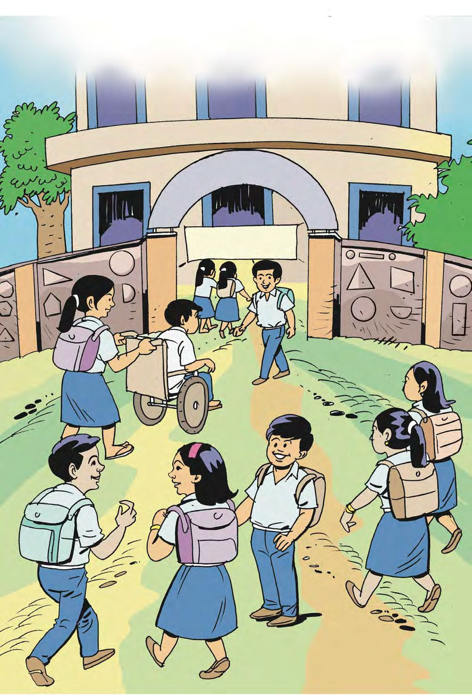
P t. L
School, Mu th
an i
Gov
4 g o e T t h n i er o J s ' t e L Math-fest Welcome

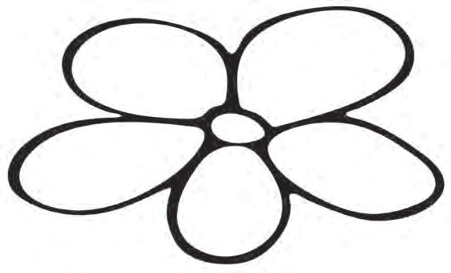
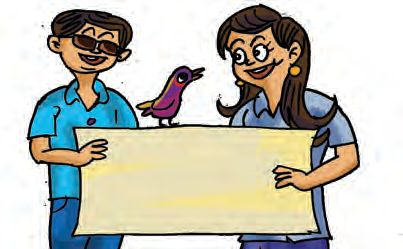
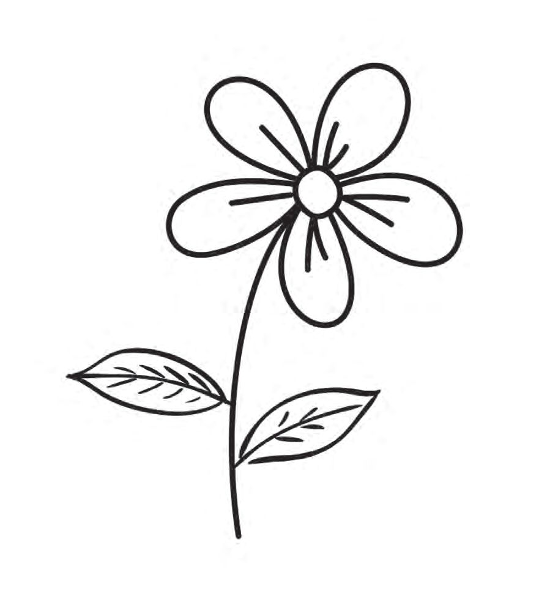
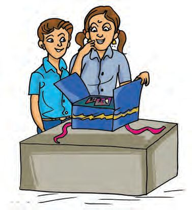

Mathematics Standard - III
Math-fest
Bibi and friends are here for the math-fest.
Friends, Please visit all the stalls.
Stall - 1 Add up... Colour in... Take two cards from the box. Find the sum... Colour the flower.
65 60
45
40
70
..... +
What I got
..... =
. = 40
... ..... + .
46
70
... = 60
. ..... + .
.... ..... + . = 65
.....
+ ...
.. =
45


Thousands and Thousands
Pairing Pair
Sum
Pair
Sum
1+9
10
1 + ........
100
........ + 65
100
........ + ........ ........ + ........
10 10
........ + ........
10
........ + ........
10
60 + ........ 70 + ........ ........ + 45
Complete the table
100 100 100
There are other pairs too which add up to 100.
What I found out
Can you find some more? 49 + 51 = 100 48 + 52 = 100
A pair means two things taken together. 80 and 20 form a pair with the sum 100.
Can’t we easily find all pairs with the sum 100 ?
Connect all pairs with the sum 100
Pairs making 1000 50 + 950 = 1000 150 + 850 =
40 41 42 43 44 45 46 47 48 49 50 51 52 53 54 55 56 57 58 59
250 +
= 1000 + 650 = 1000
450 +
47
= 1000

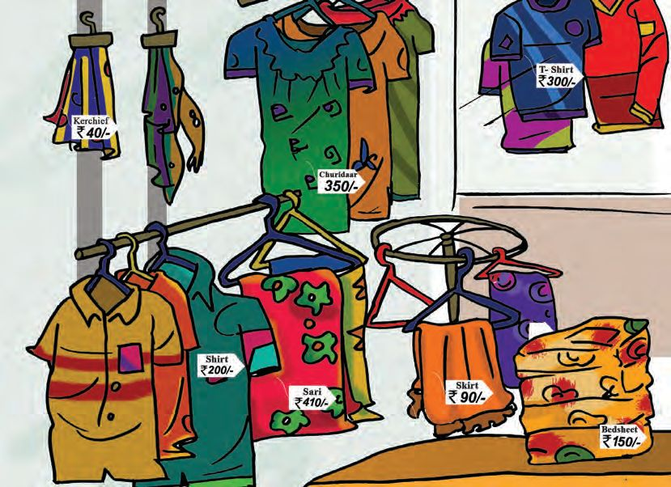
Mathematics Standard - III
Stall - 2 Cloth shop
Which among the two dresses can we buy with 500 rupees?
Look at the prices and calculate.
Bill 1
Bill 2
Item
Price
Item
Price
........
........
........
........
........
........
........
........
Total
500
Total
500
48

Thousands and Thousands
Stall - 3
Beauty of numbers What are the numbers you can make by using these digits only once? Which is the largest among them?
3
1
And the smallest?
2
What is their sum? The numbers I got
The largest number I got
The smallest number I got
Sum and
My guess: between
Number got by adding What if we use the digits 2, 3, 4 ?
What if we use the digits 3, 4, 5 ?
The largest number
The largest number
The smallest number
The smallest number
The number got by adding
The number got by adding
49

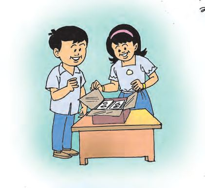
Mathematics Standard - III
The speciality of the digits of the sum
Write the answers without actually adding. Say how you did them.
310 + 230
=
317 + 230
=
315 + 231
=
308 + 232
=
540
Stall - 4
Let’s play together! Welcome ! Everyone gets a gift packet
Hey ! Play money !
What Bibi and Jebi got Notes/ Coins
What Bibi got Number Amount
What Jebi got Number 0
100
2 0
50
4
0
20
3
0
10
4
5
5
0
2
200
2
Total
Total
50
Amount

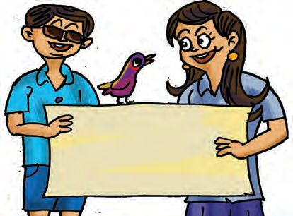
Thousands and Thousands
Bibi got
Jebi got Total
Amount needed to make it 1000 rupees
You can get upto 50 rupees from the stall to make the total 1000
You can also play this game. Write what you got in a table and calculate the total. Do this in your notebook
Stall - 5
Fun and games
312
146
205
320
148
237
419
400
315
236
226
145
536
325
200
130
Throw the token twice. Find the sum of the numbers got.
Bibi and Jebi got the same pair of numbers in their first round. See how they calculated the sum.
Numbers got : 237, 146 Bibi’s method
Jebi’s method
237 + 146 = 200 + 30 + 7 + 100 + 40 + 6 = 200 + 100 + 30 + 40 + 7 + 6 = 300 + 70 + 13
237 = 230 + 7 146 = 140 + 6 237 + 146 = 370 + 13 = 383
= 300 + 83 = 383
51

Mathematics Standard - III
Hundreds
Tens
Ones
2
3
7+
1
4
6
7 and 6 added together gives 13. The 10 in 13 is shifted to the place of tens.
1 3
8
3
237 and 146 added together gives 383. What do we get on adding 236 and 148 ? Can you do it in your head? 536+ 300
Minha got 536 and 325. See how she found the sum.
836+ 20
536 = 500 + 30 + 6
856+ 5
325 = 300 + 20 + 5 536 + 325 = 800 + 50 + 11 = 861
861
Let’s play this number game. Each player gets two throws. Find the sum of the numbers got in each round. Numbers I got Second round :
First round :
Adding method
Adding method
52

Thousands and Thousands
Find the mighty How did we get 164 ?
590 164 199
146
99
65 If 1 is added to 199, what will be the change in the mighty one? Say it without any lengthy computation.
If 1 is added to 146, what will be the mighty one then ? Say it without any lengthy computation.
Suppose we add 2 to 199. What will be the mighty one then? If each of the four numbers at the bottom is increased by one, how much would the mighty one increase?
Say how we found out the answers.
53

Mathematics Standard - III
Stall - 6 Wonderland of numbers
8
1
Add the numbers in the first row. Fill up the other cells so as to get the same sum.
6
3
7 9
Add the three numbers in each column. Also the three numbers from corner to corner. What is special about the sums?
2
Complete the magic square using numbers from 23 to 31
Magic square The sums along each row, column and diagonal are all the same.
23 25
Which do you find easier?
26 2 6 +
2 6 +
3 1
3 1 +
+
31
24
Tell your friend which is the larger sum of each pair.
2 4
2 4
54
56 + 75
64 + 58
65 + 57
46 + 85

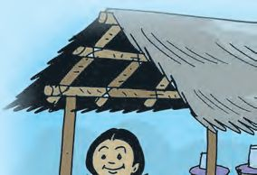
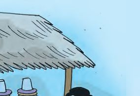

Thousands and Thousands
Water supply See, the amount of drinking water supplied during the four days of math-fest.
The total amount of water supplied during the first two litres days is The total amount of water supplied during the last two litres days is How much water was supplied for all the four days?
Day
Amount (litres)
1
437
2
524
3
581
4
448
Mental math If the amount of water supplied were 440, 520, 580, 450 litres, what would have been the total amount? Can you calculate this in your head? litres
281 kids from Kathirani school and 348 kids from Arani school visited the math-fest. How many in all?
55

Mathematics Standard - III
Stall - 7 World of patterns You can write your own patterns on the walls of the exhibition hall.
Complete the patterns 111
+
111 = 222
100
+ 10
+ 1
=
111
222
+
222 =
200
+ 20
+ 2
=
222
+
=
+
+
=
+
=
+
+
=
+
=
+
+
=
+
=
+
+
=
+
=
+
+
=
+
=
+
+
=
=
+
+
=
999
+
999
Pattern I have made
56


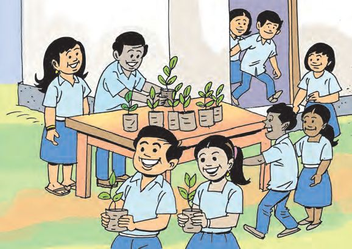
Thousands and Thousands
Go Green ! All visitors to the mathfest are given saplings of fruit trees.
Plant them... and nurture them.
Plants given
First day
Gooseberry
238
241
Mango
138
152
Jack fruit
236
166
Guava
175
246
Second day
• Which plant was given the most? • How many mango saplings were given?
• Make a few more questions like this.
57
Total

Mathematics Standard - III
Evaluation activities 1. See the number of manchadi seeds the kids in Bibi’s school
collected for the math-fest. Class 1
Class 2
Division
Number
Division
Number
A
275
A
300
B
325
B
225
Class 4
Class 3 Division
Number
Division
Number
A
375
A
245
B
215
B
350
A. Total number of seeds collected by each class.
Class 1
Class 2
Class 3
Class 4
B. Which class collected the most number?
Class
Number
C. Write the number of seeds in ascending order.
D. Which two classes must be added to get 1120 ? =
+
58
1120

Thousands and Thousands
E. The number of seeds collected together by two classes and 5 more makes 1200. Which are the two classes? Tick the right answer. A. Class 1, Class 2
B. Class 2, Class 3
C. Class 1, Class 4
F. How many more does each class need to make 1000 ? Class
Number collected
Number needed to make 1000
1 2 3 4
2. Can you continue the patterns? A. 140, 260, 380, ..................., ..................., ................... B. 25, 225, 425, ..................., ..................., ................... C. 600, 610, 630, 660, ..................., ................... D. 200, 310, 430, ..................., ..................., ................... E. 0, 115, 230, 345 ..................., ...................
Which of these increases by 200 each?
59

Mathematics Standard - III
3. Muthani school store got 847 rupees on the first day. The next day they got a 500 rupee, a 100 rupee note, five 50 rupee notes and two 2 rupee coins. On which day they got more?
A.
My guess
My calculations
My answer
B.
How much did they get in all for these two days?
My guess is between
and
.
What I calculated
4. Which of the sums below give 846 ? A. 524 + 312
B. 227 + 519
C. 546 + 400
D. 329 + 517
My answer 5. Do these sums in your head. Tell the method. A.
550 + 450 = ...................... B. 675 + 425 = ......................
C.
730 + 520 = ...................... D. 890 + 460 = ......................
E.
436 + 324 = ...................... F.
60
253 + 147 = ......................